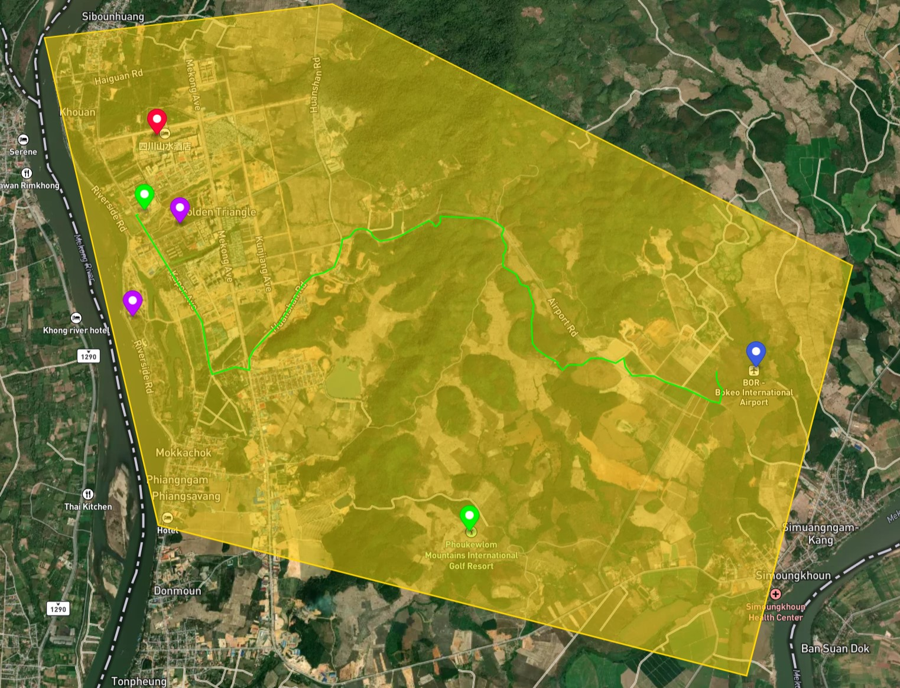

A GeoJSON file is an open data standard plain-text format designed to store and represent vector layers with simple feature geometries and their non-spatial attributes. The standard is based on the JavaScript Object Notation referenced by JSON in the name. A GeoJSON file is comprised of geoJSON objects and supports seven geometry types: Point, LineString, Polygon, MultiPoint, MultiLineString, MultiPolygon, and GeometryCollection. When nonspatial attributes are added to a geometry type it forms a Feature. When you have more than one feature it forms a FeatureCollection that contains a list of Features.

"type": "FeatureCollection", "features": [ { "type": "Feature", "properties": { "Place": "Market", "marker-color": "#be0aff", "marker-size": "medium", "marker-symbol": "circle" }, "geometry": { "coordinates": [ 100.09637795803252, 20.329056675511765 ], "type": "Point" } }, { "type": "Feature", "properties": { "Place": "Kings Roman Casino" }, "geometry": { "coordinates": [ 100.0970946393266, 20.34052966054469 ], "type": "Point" } }, { }
Examining the plain text we can see that it starts with a feature collection which indicates that this is the start of the file and that at least two geometries in our file have non-spatial attributes. This feature has a properties attribute that holds the name and other details such as the color and type of marker used for the point. Then it has a geometry that holds the geographic coordinates of the point. By knowing that point is red we know where the King Roman Casino is located in the image.
{ "type": "Feature", "properties": {}, "geometry": { "coordinates": [ [ 100.12932359515958, 20.338652447522463 ], [ 100.12952681871508, 20.338673559435335 ], [ 100.12968781000103, 20.338848439906897 ], [ 100.12981746230548, 20.338992468827897 ], [ 100.12990390568024, 20.339029949501622 ], [ 100.12997077408221, 20.3392885251194 ], [ 100.12992477196127, 20.33965958163489 ], [ 100.12998031548375, 20.33976978983354 ], [ 100.13388432651982, 20.33956677778461 ] ], "type": "LineString" } },
This is an example of how a portion of the green line that connects the Kings Roman Casino to the International Airport in the image is represented in GeoJSON file. It is a feature with non-spatial attribute properties and geometry that contains a list of its connected points as coordinates in the Linestring
{ "type": "Feature", "properties": { "stroke": "#ffd707", "stroke-width": 2, "stroke-opacity": 1, "fill": "#ffd609", "fill-opacity": 0.5 }, "geometry": { "coordinates": [ [ [ 100.11743475648342, 20.363742181326685 ], [ 100.0847500912738, 20.35981863241804 ], [ 100.10023099139897, 20.3074796674631 ], [ 100.16201012806067, 20.29274271797408 ], [ 100.17533125564478, 20.334425934621976 ], [ 100.11743475648342, 20.363742181326685 ] ] ], "type": "Polygon" }, "id": 6 },
This is an example of how the gold-colored polygon in the image is represented in the GeoJSON format. It's similar to the other geometries with its non-spatial attributes that describe the color, width of the line, and opacity, and then its geometry which stores the coordinates of the polygon vertices. Finally, there is an id of 6.
{kind=link}